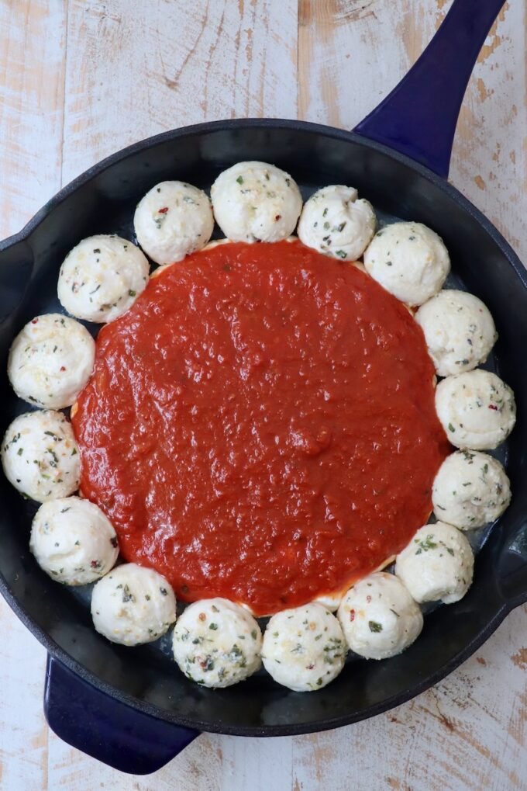
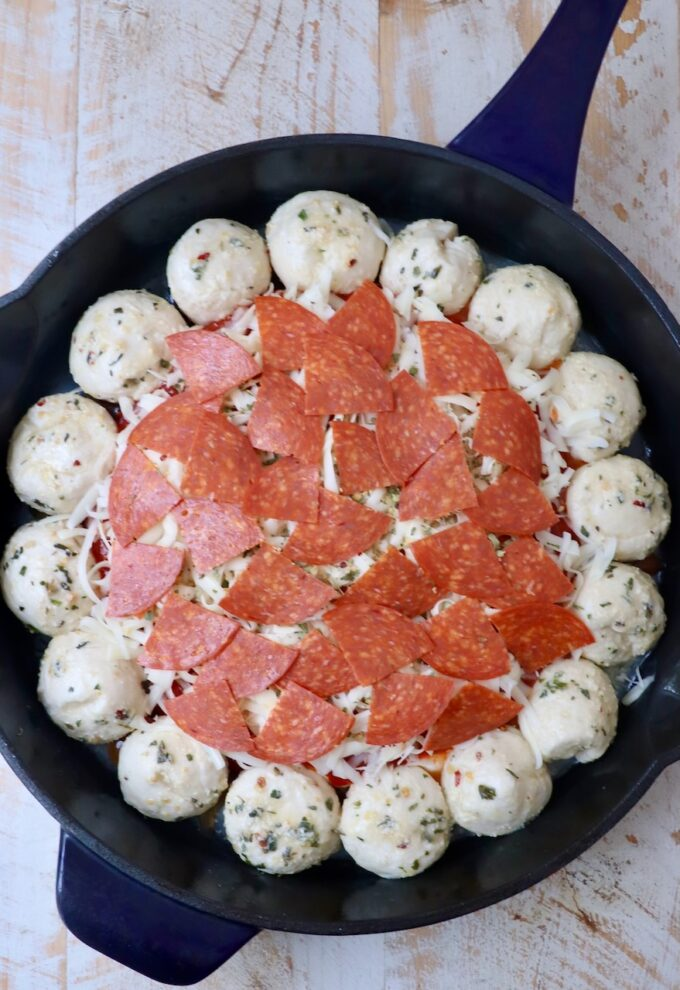

Cheesy Pepperoni Pizza Dip
Warm, bubbling, and perfect with toasted baguette or chips!
Ingredients
- 225g (8 oz) Cream cheese, softened
- 1/2 cup Sour cream or Greek yogurt
- 1 tsp Italian seasoning & garlic powder
- 1 cup Pizza sauce or Marinara sauce
- 1.5 cups Shredded Mozzarella cheese
- 1/2 cup Grated Parmesan cheese
- 1/2 cup Pepperoni slices
- Fresh basil & Baguette slices for serving
Step-by-Step Instructions

Step 1: Beat the base
Mix cream cheese, sour cream, and Italian herbs until smooth and creamy.

Step 2: Spread in baking dish
Spread the seasoned cream cheese mixture evenly into the bottom of a pie dish.

Step 3: Layer pizza sauce
Pour and spread marinara or pizza sauce gently over the cream cheese layer.

Step 4: Add cheeses
Generously top the sauce layer with shredded mozzarella and grated parmesan.

Step 5: Add pepperoni
Arrange sliced pepperoni and any favorite pizza toppings across the melted cheese.

Step 6: Bake in oven
Bake at 190°C (375°F) for 15–20 minutes until the cheese is bubbling and golden.

Step 7: Toast baguette
Slice and toast garlic bread or baguette slices until crispy for dipping.

Step 8: Garnish and serve
Garnish with fresh basil or parsley and serve warm right from the oven.